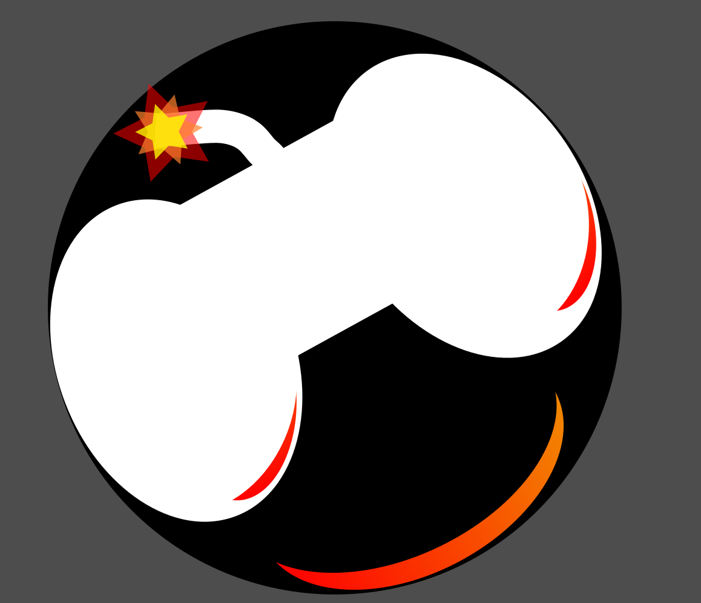

If fewer than 4 unchecked perks remain, fill remaining slots with random checked perks. Use random legal build button to generate the final build.
After bringing an item type, you can't bring the same item type with you for the next 5 games. Item and addon rarity restrictions are as follows:
On the first game, there are no restrictions.
If the last game ended in 4 escapes, there are no restrictions in the next trial.
If the last game ended in 3 escapes, no iridescent (visceral) addons may be used.
If the last game ended in 2 escapes, only items and addons up to blue rarity may be used.
If the last game ended in 0-1 escapes, only items and addons up to green rarity may be used.
Item and addon rarity restrictions are determined by the previous match's total survivor escapes, regardless of whether you personally escaped or died.
All games count regardless of what snipings, disconnects, suicides, or otherwise throwings occurred. Only clear hacker games don't count.
This is a SoloQ challenge. No friends allowed.

Created by gbBaku
DBD challenge tracker for those seeking the ultimate SoloQ survivor challenge.